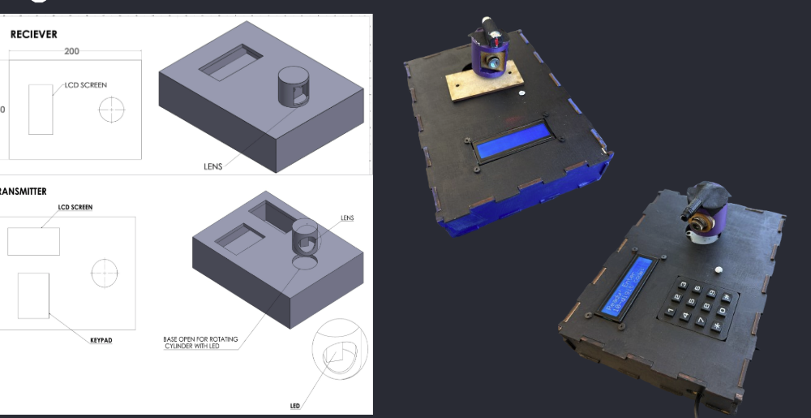

Designed and built a portable laser communication system that encodes a 10-digit message via keypad and transmits it point-to-point using a 650nm laser, with no WiFi or Bluetooth. The receiver decodes the signal and displays it on an LCD. Achieved about 98% decode accuracy in testing.
The project brief was to design a portable optical communication system that could transmit a 10-digit message from one unit to another using a laser, with no wireless protocols involved. The idea was to make the underlying physics of optical communication visible and hands-on. Key requirements included at least 95% decode accuracy, eye-safe laser operation, transmission in under 30 seconds, and a bill of materials under $250.
The system had to work autonomously once the message was entered, meaning no human intervention during transmission. Getting reliable alignment between the transmitter and receiver turned out to be one of the harder parts of the project.

design drawings and finished transmitter and receiver units
On the transmitter side, the user types a 10-digit message on a keypad. The Arduino UNO encodes it as a binary pulse train and fires the 650nm laser while a stepper motor sweeps the beam to find alignment with the receiver. Two additional 650nm lasers on the receiver side, paired with a 650nm bandpass filter, provide visible alignment confirmation and help reject ambient light interference.
A key design iteration was increasing the bit-encoding time and laser drive current. Early testing showed the error rate was too high at shorter bit times. Extending the timing and increasing current brought the decode accuracy up to about 98% under stable alignment conditions.
The receiver uses a BPW24R phototransistor to detect the incoming signal through the bandpass filter. The signal is amplified by an MCP6241 op-amp and digitized by an LM311P comparator before being decoded by the Arduino Nano and displayed on the LCD screen. Both units run off 9V batteries through onboard regulators and power supply modules.
The enclosures were designed in CAD and fabricated at EPIC using a laser cutter for the wood panels and a 3D printer for the optical mounts. Battery access was handled by making the top panel of each enclosure removable, though a more integrated solution would be better in a future version.
Over 10 test trials, the system averaged 98% decode accuracy, exceeding the 95% target. Five of the seven design objectives were fully met. Autonomy and long-range reliability were the two areas that still needed work. The system required stable alignment to perform well, and outdoor use introduced too much ambient light interference.
The report covers the full design process, component selection rationale, testing results, and lessons learned about system integration. It was written with group members Hawa Alsulaiman, Taha Ben Hadj Miled, and Austin Li.
↓ read the full report